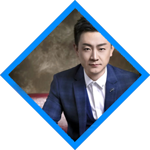
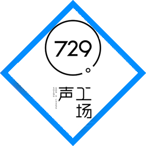

張杰
- 
- 
729是個相對鬆散的組織。
作為配音界頂流的「杰大」阿杰，聲音清朗，聲線獨特，自帶洒脫的風流氣質，非常適合配翩翩佳公子一類的男性角色。非本科出生的他，自小就對動畫片裡的配音演員很感興趣，愛好整理和記錄每個演員與角色的對應關係，甚至總結出遼寧人民藝術劇院版《聰明的一休》的配音規律。同時，阿杰也是個樂觀的人。大部分時間看到的阿傑都上揚著嘴角，微笑或大笑地面對著觀眾、面對著生活、面對著全世界，用這種積極的態度感染旁邊的人。
導演作品-《狐妖小紅娘》、《銀之守墓人》、《全職高手》、《小綠和小藍》、《我家大師兄腦子有坑》、《時光代理人》...... 配音作品-蕭錦昀——《兩不疑》、白起——《戀與製作人》、葉修/葉秋——《全職高手》、東方纖雲——《我家大師兄腦子有坑》、無心——《少年歌行》、巴德爾——《幻想神域》、季鷹——《少年錦衣衛》......